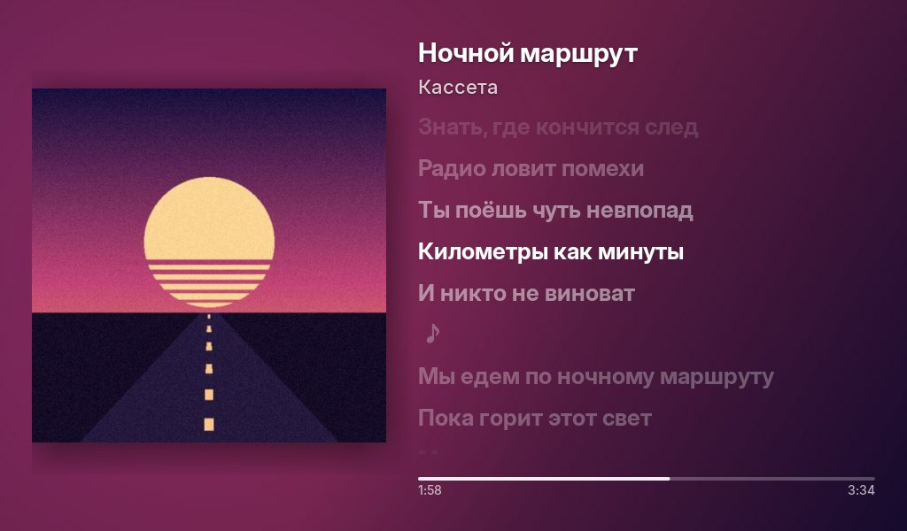
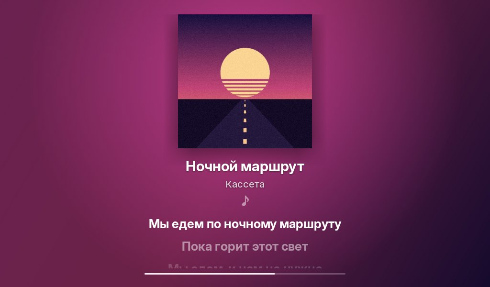
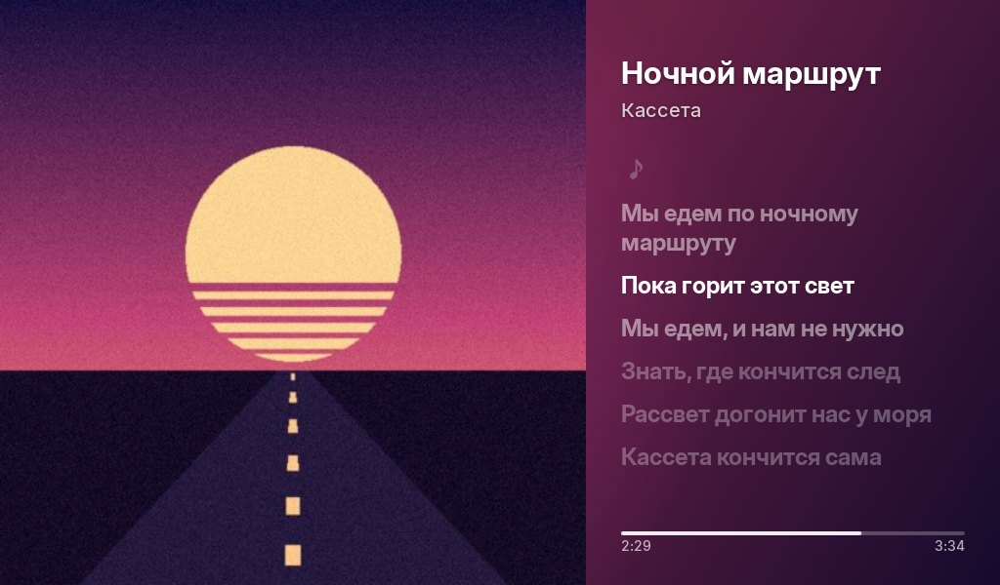
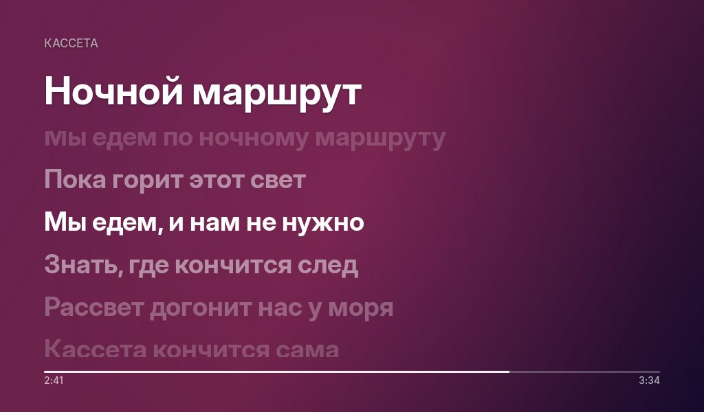

0:000:00
Это не картинка. Касание — пауза, свайп или стрелки — другой трек
Сейчас играет — экран для музыки из старого Android‑планшета
Показывает, что играет на компьютере: обложку, исполнителя и текст песни, где горит строка, которую сейчас поют.
На экране




Galaxy Tab 3 Lite, 2014 год
Сторона A: что умеет
7 треков · снято на «Ночном маршруте»
-
Цвета берутся из обложки
Фон собирается из главных цветов обложки и мягко светится в такт музыке. Эта страница делает так же.
-
Строка горит, когда её поют
Тексты находятся сами. Коснись строки на планшете — песня перемотается к ней. Здесь тоже можно.
-
Клип вместо фона
Если у трека есть видео, оно идёт за обложкой. Нет видео — фон из цветов обложки или размытая обложка.
-
Пять видов экрана
Выбираются в окне настроек на компьютере, планшет переключается сразу.
КлассикаСценаПостерМинималВинил -
На паузе — часы
Время, дата и погода. Эти часы настоящие, они идут.
-
Ночью цифры краснеют
С 23 до 8 экран почти не светит и не мешает спать.
-
И на телевизоре
Android TV: пульт ставит паузу, листает треки и меняет громкость на компьютере.
0:002:20
Сторона B: как поставить
Нужны Windows 10 или 11 и планшет или телефон на Android 4.1 и новее в той же сети Wi‑Fi.
- Запусти программу на компьютереОна живёт в трее рядом с часами, сама добавляется в автозапуск и спрашивает разрешение у брандмауэра.
- Поставь приложение на планшетСкопируй APK или нажми «Установить» в окне настроек — по кабелю или по Wi‑Fi.
- Включи музыкуПланшет сам найдёт компьютер в сети. Дальше всё происходит само, даже обновления.